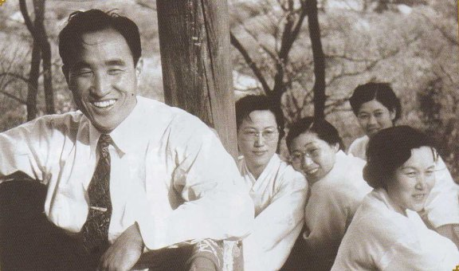
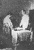
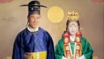
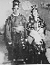
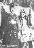
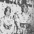
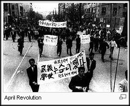

1960

1960
1 jan. Första sjuårs-perioden börjar. 1:a bruden 1944
Till den bruden var allt som Gud hade förberett kopplat, allt som var världens skatt -- den demokratiska världen och
den kristna världen. Detta var det gyllene tillfället för världsförening direkt efter andra världskriget.
(1945-1952)
I den här typen av förberedd miljö kunde jag ha kommit att leda historien i 40-ärsåldern. Istället, på grund av
kristendomens misslyckande, blev jag tvungen att börja om med mitt bröllop i 40-ärsåldern (1960). Jag var tvungen
att återupprätta allt utan att då. Dessa 14 år var avslutningsfasen av tillväxtperioden. Därför tog jag emot Mor
1960 efter de 14 åren -- sju är plus sju. Ytterligare en sjuärig period återstod, och den började 1960. Från 1960
till 1968 upprättade jag Sanna föräldrars dag, Sanna barns dag och slutligen Sanna Guds dag. Vid det laget kunde jag
stå på världsnivå.
1960 förberedde vi ett nytt fundament för seger, försynens fundament för att på jorden återupprätta den standard
som Jesus hade hoppats på för 2000 år sedan. Från en sådan häpnadsväckande och episk startpunkt, gick vi in i en ny
epok i historien.
Under tiden av denna första sjuårs-period, kan inte demokrati styra världen och om kommunismen kommer att
dominera så kommer hela världen att gå under.
Kommentar; den Sovjetiska GRU-officeren, senare generalen Dimitri Polyakov väljer 1960 att arbeta för väst,
USA-England.
Var detta himlens vilja (påverkan, samvetet) för att rädda världen gå under?
Polyakov sa senare innan han avslöjades och sköts, att han gjorde det för det ryska folkets skull, som enligt
honom led under kommunismen. Polyakov hävdade att han var en rysk patriot, motiverad att bli dubbelagent på grund
av hans avsky för korruptionen inom kommunistpartiets elit.
Från och med 1960 genomförde medlemmar aktiviteter på gatorna i alla stöder runt om i Korea, såväl som i de stora parkerna i centrala Seoul.
ärets motto är "Lät oss göra detta året till det bästa resultatet i vära liv."
24 feb. 'Sung Shi' (familjetidning) distribueras.
13 mars 'Sung Suk' (familjetidning) distribueras.
27 mars 'Föräldradagen' proklameras. (1 mars enl. månkalender)
11 apr. Sanna Föräldrar gifter sig, i heligt äktenskap välsignat av Gud,
och uppfyller därmed profetian i Uppenbarelseboken 19:7 om Lammets Bröllop.
Heligt Salt delas ut.
(16 mars enl. mänkal.)
För Enighetskyrkan, var det detta som avgjorde huruvida vi levde eller dog. Genom den helige vigseln som hålls 1960, säkrades den individuella positionen för första gången. Vi etablerade därmed en startpunkt.
|  |  |  |  |  | Lammets Bröllop! |
{kind=link}
{kind=link}
{kind=link}
{kind=link}
{kind=link}
{kind=link}
{kind=link}
Kommentar: Enligt kyrkans tradition skall det bli 3 Välsignelser för alla under vår livstid.
En på kyrkonivå (1960), en på nationell (se 2003) och en på världs-nivå (se 2012 &
2013).

Här ses hans första son Sung Jin Nim född april 1946, från bröllopet 1944.
Intressant samtida händelse: Just i april 1960, startade en explosionsartad utveckling av pastor David
Yongghi Chos, Full Gospel Church i Seoul Korea. Citat, pastor Cho; "Vi startade en hel-natts bönemöte för
första gången i Korea. Något som nu spridit sig över hela Korea. Många blev helade och välsignade genom Gud.
Många blev fyllda av den helige ande, och deras desperata böner besvarades".
Källa: Boken Fourth-Dimensional Spirituality in a Three-Dimensional World by Rev David Cho.
19 april Världen:
April revolutionen, som ibland kallas den 19:e april revolutionen eller 19:e april rörelsen, var ett
folkligt uppror i april 1960, under ledning av arbets- och studentgrupper, som störtade den envåldiga första
Republiken SydKorea under Syngman Rhee. Det ledde till en fredlig avgång av Rhee och övergången till den andra
republiken.

Händelserna blev berömda genom upptäckten av en död kropp i Masans hamn, en student som dödats av tärgas i
demonstrationerna mot valet i mars.
Nationalförsamlingens talman Ki Boong Lee och hans hustru, Maria Park, var de mest direkt ansvariga för förföljelsen
riktad mot Enighetskyrkan (ca 1955).
I synnerhet Maria Park, hade orsakat studenter och lärare att slängas ut från Ehwas kvinno-universitet.
Park och Lees första son var kapten Kang Suk Lee, som hade blivit president Rhees adoptivson.
En dag, det var en hemsk händelse tog kapten Lee en pistol och sköt och dödade sina biologiska föräldrar, Park och
Lee, samt deras andra son, Kang Uk Lee. Han sköt därefter sig själv.
Detta hände 28 april 1960.
Mer än någon annan gång i mitt liv kände jag att jag kunde förstå innebärden av de gamla talesättet:
"Den som
följer Himlen kommer att välsignas, och den som förråder Himlen kommer att förstöras."
22maj Världen: Samma är 1960 som Sanna
Föräldrars Välsignelse, var jordens hittills största
jordbävning i modern tid i Valdivia Chile.
Med värdet 9.5 på Richterskalan.
Jämför med jordbävningen nämnd i Bibeln: Citat "Men Jesus ropade än
en gång med hög röst och gav upp andan. Då brast förhänget i
templet i två delar, uppifrån och ända ner, jorden skakade och
klipporna rymnade, och gravarna öppnade sig. Många kroppar av avlidna
heliga uppväcktes, och efter hans uppståndelse lämnade de sina gravar
och gick in i den heliga staden och kunde ses av många. När officeren
och de som bevakade Jesus tillsammans med honom såg jordbävningen och
det andra som hände, greps de av stark fruktan och sade: "Den
mannen måste ha varit Guds son." Matt 27:47
16 apr. Tre par välsignas.
Eu Hyo Won, Won Pil Kim, Young Whi Kim.
17 apr. 'Dagen för Hjärtats återupprättelse' proklameras.
Världen: 1 maj 1960 U-2 spionplan från USA sköts ner av de Sovjetiska luftförsvarsstyrkorna.
20 juli Första 40 dagars sommar-witnessing under den första 7-årsperioden.
19 nov. 'Barnens dag' su. Barnens dag började som ett tacksågelseerbjudande, som en Thanksgiving-söndagsgudstjänst den 19 november 1960 bara några dagar före den amerikanska Thanksgiving-helgen.
25 dec. 40 dagars vinter pionjär-witnessing.
År 1960 publicerades DIVINE PRINCIPLE AND ITS APPLICATION - link skriven av Young Oon Kim (tidig koreansk medlem och senare professor i teologi)